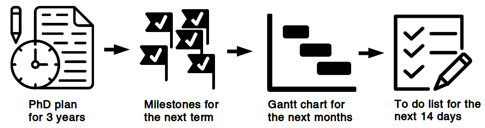
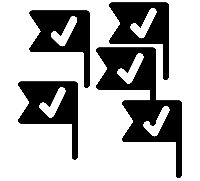
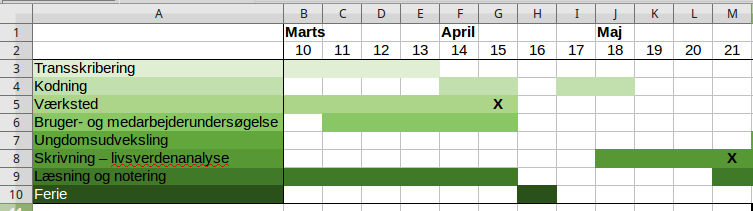
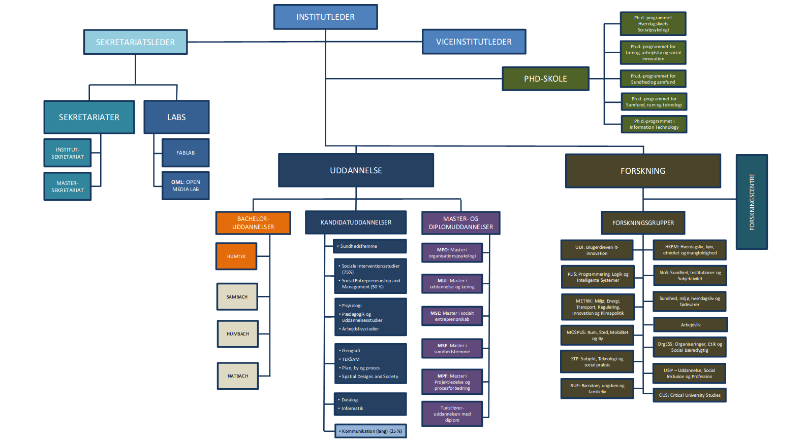
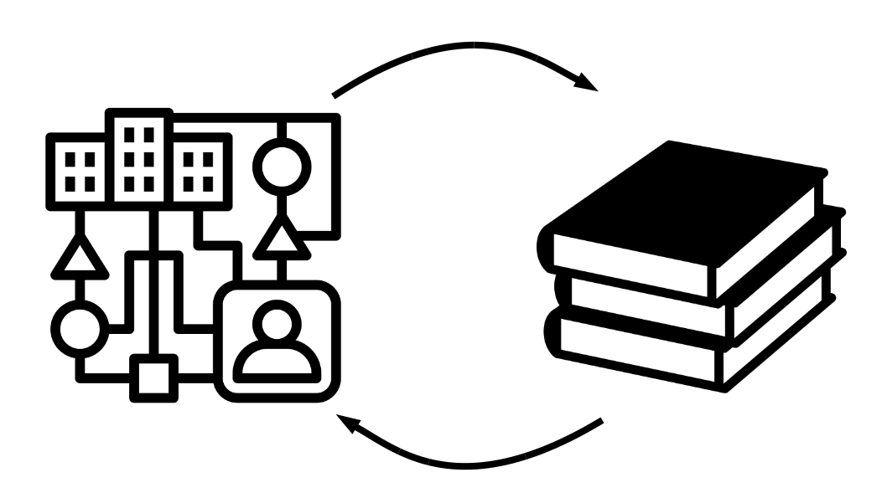

The PhD process from the point of view of a PhD student
My PhD project

Planning the PhD process
Breaking down the phd plan

Example of milestones

- Interviews are transcribed and coded
- Analysis chapter is drafted
- Future workshop is carried out
- User survey is completed
Example of gantt chart


Example of to do list
- Make presenation for PhD introductory seminar
- Book focus group interview
- Test user survey
- Transcribe Mathias
- Read "Mit eget fælles af bedste"
- Read material for research group meeting
- Follow up on participants for future workshop
Interaction with academia

Interaction with practice
